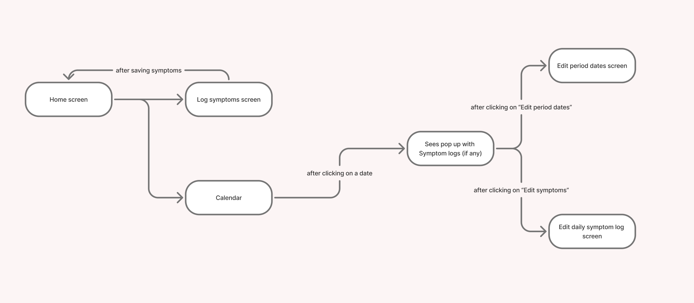
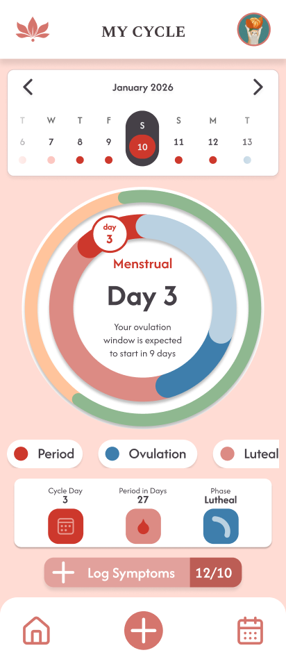
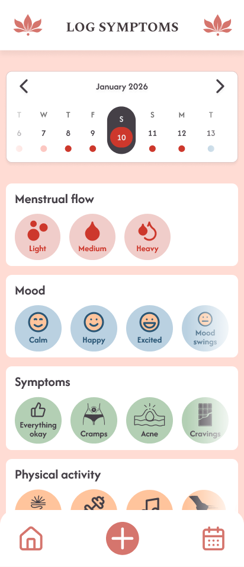
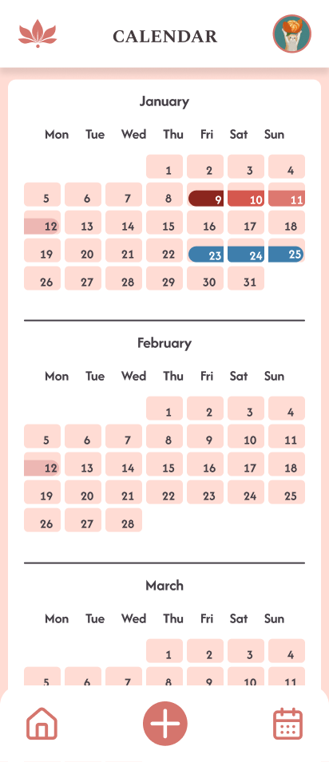
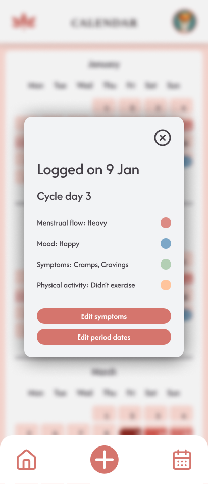
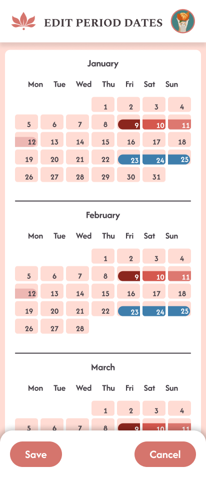
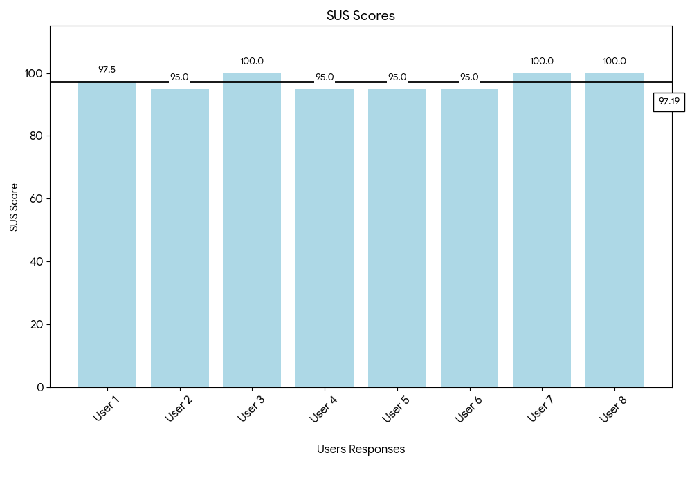
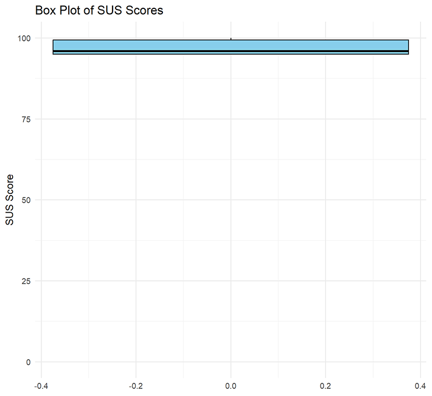
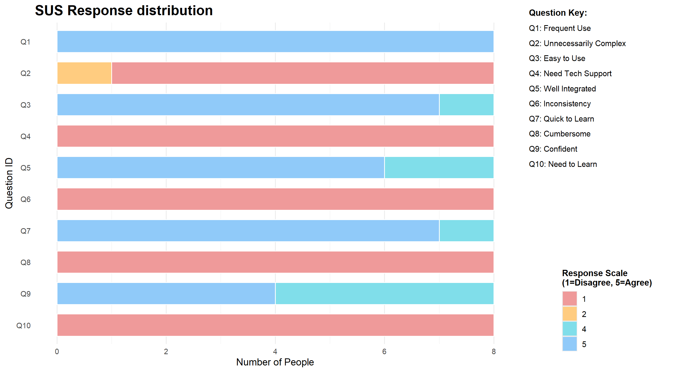
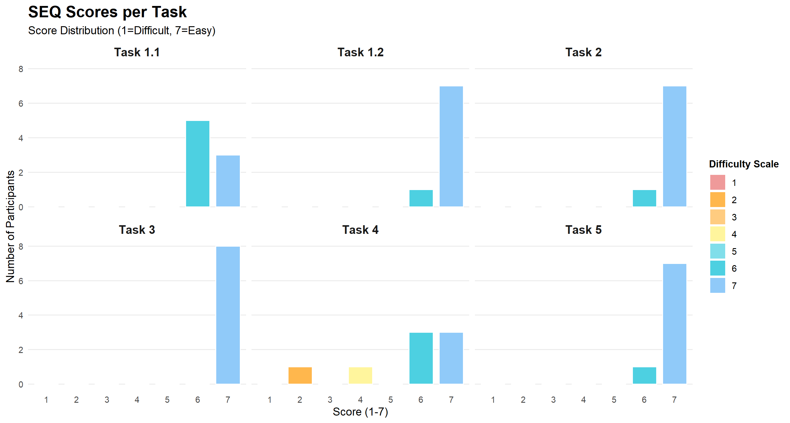

Periodt.
Description
A period tracker app that helps women track their mood and health throughout and around their period. It helps them understand their cycles better.
Within the app you'd be able to:
- Track your cycle stage
- Log any symptoms or other activities within the app
- See your logs and cycle stages within a calendar view
- See the predictions for future periods
Team Members
Angelina Hess, Diana Ivanova
App Concept
Target Users and Use Case
We are specifically targeting menstruating student girls who'd like to understand how their bodies and cycles work.
A use case example would be, starting your period and logging it within the app to get information on when your next cycle starts.
User Flow

Hi-Fi Prototype






Design of the SQLite database (Entity Relationship Diagram – ERD)
The database architecture is organized into three layers:
- Physical Database Tables (shown below): Data saved to disk with foreign key relationships
- PopulatedDailyLog Data Class (shown in second diagram): An in-memory view constructed by Room that aggregates data from multiple tables
- Prediction Logic Models (shown in third diagram): Calculated models that generate cycle forecasts and predictions based on historical data
PopulatedDailyLog Data Class (In-Memory View)
The PopulatedDailyLog is a Room data class that aggregates data from multiple tables in memory using @Embedded and @Relation annotations:
Prediction Logic Models (Calculated on the Fly)
The app uses prediction models that calculate cycle forecasts and period predictions based on historical data from the database:
Usability Test Plan
Heuristic Evaluation
| Page | Problem | Heuristic | Problem Severity |
|---|---|---|---|
| Home page | There is a scroll issue connected with the cycle circle. When a user tries scrolling down on the screen, they unwantedly go to another date but do not stay at today's date. | 3. User Control and freedom | Major |
| Home page | At the Calendar strip at the top if another date is picked, going back to today's date isn't clear enough. A text button that says "Today" would be better. | 3. User Control and freedom | Major |
| Calendar/Log Symptoms page | When trying to log period it might be confusing that there are 2 ways of logging period dates (through Log Symptoms page by logging Menstrual flow or through the calendar by adding period dates). | 4. Consistency and Standards | Major |
| Home page | In the Calendar strip a user can select future dates meaning they can log data for the future, which will lead to errors when it comes to predictions. | 5. Error prevention | Minor |
Target Users
Young female university students who need a reliable period tracking app.
Hypotheses
Separating the vertical page scroll from the cycle-circle interaction will significantly reduce the number of accidental date changes.
Testable question: Does decoupling the scroll interaction from the date selection element reduce the user error rate?
- Dependent variable: The number of times a user unintentionally switches dates while trying to scroll
- Independent variable: Current design of the Cycle circle
Implementing a 'Return to Today' button will decrease the time required for users to navigate back to the current date.
Testable question: How does a 'Return to Today' button impact the time for navigating back to the current date?
- Dependent variable: Time for navigating back to the current date
- Independent variable: Implementing a "Return to Today" button
Users will complete the task of logging period dates faster using the Calendar screen compared to logging the Menstrual flow.
Testable question: Which logging way (Calendar Screen vs. Log Symptoms Screen) is more efficient for period dates?
- Dependent variable: Time/Efficiency when logging period dates
- Independent variable: Menstrual Flow logging or Calendar logging
Planned data to collect
We plan to collect user demographics to ensure they match our target group, along with SEQ, SUS, and feedback form results. For qualitative data, we will observe the thoughts, actions, and behaviors of users while they use the app. Our goal is to identify whether the app is intuitive.
Methods
To evaluate the app's usability we conducted 2 rounds of user testing. The user tests were conducted in quiet spaces in the university utilizing a controlled standardized setup. For each test session both team members were present:
- One responsible for guiding the user through the tasks, and providing the questionnaires (SEQ and SUS, feedback form)
- One being a note taker, responsible for observing the session and recording qualitative data, including user actions, quotes, errors, etc.
The users were asked to perform 5 tasks:
- Select a day you want to add a daily symptom log for, using the cycle wheel and scroll down. Now log your symptoms for that day.
- Find your logs in the calendar.
- In the calendar strip, select a date within another month and then navigate back to today's date efficiently.
- Please log a 5-day period on any day and then delete it.
- Please log your period dates for the last 3 months and check the accuracy for your Cycle and Period averages.
We conducted:
- Formative testing with 5 people during the development of the app in order to check if all of our features were intuitive enough.
- Summative testing round was conducted following the implementation of user feedback with three participants to verify that the changes effectively resolved the identified issues and enhanced the overall user experience.
During both the Summative and Formative round of testing the test users were given:
- Informed consent about the user testing
- Participation form, where we collected their demographics data as well as their period tracking preferences
- SEQ questionnaire after every task
- SUS questionnaire after all of the tasks
- Optional feedback form
User Test Results
How many test subjects participated in the test (with their demographics)
Our test users were 8 women (5 in Formative testing; 3 in Summative testing) mainly falling into age range of 18-22 years old, as well as one participant from the 23-25 age range.
All our test users were interested in learning more about their cycle. The majority said they currently use a dedicated mobile app (such as Flo, Clue, Stardust) to track their cycle. The rest stated they relied on more manual methods like a Calendar/Notes app. Only one participant reported they didn't track their period at all.
The main frustrations our test users expressed with their current period tracking apps were about monetization, lack of trust when it came to their data privacy and usability.
Summary of the quantitative evaluation
Analysis of the SUS questionnaire results confirms that our app achieved an excellent average score of 97.19.


Here you can see exactly how the 8 participants answered each of the 10 standard SUS questions:

While participants rated most tasks as 'Easy' or 'Very Easy,' Task 4 ('Log and delete a 5-day period') was a notable exception. Users in the formative testing struggled to locate the delete button due to poor visibility, resulting in significantly lower scores for this task.

Most relevant feedback/comments
Task 1:
Clear clicking and scrolling issue regarding the wheel, some users didn't even notice the unwanted day selection on the wheel while scrolling while others got irritated by the wheel.
- Need to fix cycle wheel hit box for scrolling
- Get the phase prediction logic and placement to work
Task 1.2:
Logging is easy, some wanted to log for a day by clicking on it on the calendar strip.
- Need accessible logs through calendar strip
Task 2:
Everyone found the daily logs easily on the calendar.
Task 3:
Before, when the get back to today button was an arrow during the pilot, there were difficulties going back. However, after it was changed to "today" text there were no problems.
- Today button only works after a day is selected
Task 4:
There were no problems with creating period logs. Using calendar or logs to start period was evenly split. However, to delete, all used calendar. The deleting button was difficult to spot at times.
- Clarify clicking no period in logs deletes period
- Make delete button in create period calendar more obvious
- Create a delete button within the calendar popup
- After logging, user should stay in logs page to log any additional days
Task 5:
Only a few users were able to compare their cycle accuracy so many skipped this task. However, everyone easily found the stats info on profile. Those who were able to compare said the predictions were pretty accurate.
- Fix current day predictions and how it displays on the wheel
Mentions to any updates made to the app because of the received feedback
- Enabled double-clicking on a calendar strip day to open that specific day's popup
- Improved the Today button behaviour so it functions even when no day is currently selected
- Replaced the arrow icon with a clearly labelled Today button to improve clarity and discoverability
- Implemented dynamic wheel behaviour that adapts based on the selected day's cycle ID
- Added a delete button within the popup and increased its prominence in the edit period flow
- Differentiated between create period and edit period states based on whether the selected calendar day already contains a period
- Updated the symptom logging flow so that after saving a log, a confirmation notification appears while the user remains on the logs page
Final Reflections
Angelina Hess
The Hi-Fi prototype was built collaboratively, with a focus on bringing together functionality, interaction, and visual design in a way that felt cohesive and easy to use. The work covered several core features, including:
- Defining and implementing the prediction logic that powers cycle insights
- Designing the cycle wheel to clearly show the current phase, ovulation, and upcoming periods
- Creating a calendar strip that adapts to predictions and links directly to calendar data
A lot of attention was also given to the overall structure and navigation, so the app felt intuitive to move through. This included:
- Designing the nav bar for easy access to key sections
- Shaping the homepage as a central overview of cycle information
- Exploring widget functionality for quick, at-a-glance insights
- Making layout decisions that kept information readable and well-spaced
Visual design was treated as an ongoing process rather than a final step. This work included:
- Refining overall styling and visual consistency
- Designing the splash screen and first-time experience
- Building the profile page and linking it to prediction data
- Focusing on the display and styling of predictions, especially how ovulation is presented
Finally, usability testing helped ground the design decisions in real user feedback. This involved:
- Acting as a note taker during testing sessions
- Identifying areas of confusion or friction
- Implementing changes based on tester feedback to improve clarity, flow, and overall usability
Challenges:
- Making the cycle wheel adapt dynamically according to phase lengths and period start, and making today's date show on the wheel
- Resolving merging issues and following the git branch logic
- Getting the predictions to work and correctly predict the period, ovulation dates, and phases
- Figuring out the logic behind how the system would store and log data
- Connecting everything to the database correctly. Diana did the initial logic for the repository and database, so there was a slight miscommunication about how things were stored that caused no database-level issues and prevented some features from working. Still, it was resolved once we could visualize how the data was stored
Diana Ivanova
Firstly we worked together on the foundational aspects of the project, and specifically:
- Database Design: Structuring the schema to handle user data and cycle tracking.
- Hi-Fi Prototype: Designing the user flow and visual interface before implementation.
After having a clear idea on the database design, I was responsible for setting up the Database layer. Additionally, I focused on the Calendar functionality, Symptom Logging flow, and CRUD operations for period tracking:
- Implementation of the main calendar view
- Logic for adding, editing, and deleting period dates
- Displaying symptoms on the pop-up dialog in the Calendar screen
- Logic for adding, editing, and deleting specific symptoms
- Implemented the functionality to start a period directly from the Log Symptoms flow (connecting it to the Calendar)
- General styling and customizing the icons, so that it matches our Hi-Fi prototype as much as possible
During the User testing phase I was responsible for guiding the user through the tasks, and providing the questionnaires (SEQ and SUS, feedback form).
Challenges:
- Managing to make the possibility to start a period both from logging "flow" in the Log Symptoms screen and starting a period in the Calendar work
- Merge conflicts, git issues, and changes disappearing after merging
- Realized there are issues with the calendar and log symptoms page connection when logging period dates and fixing that was a challenge
- The cycle wheel was breaking because of the code that I added after solving the merge issues
How the final app meets the initial concept
Our period app shows all relevant information regarding the user's cycle, uses users' logs and inputted data to predict cycles and inform them on personalized information regarding their menstrual cycle.
What could be further improved, if possible
- Fix the scrollability of the homepage
- Account for different phone types and screen sizes (scrollability and accessibility)
- Adjust the prediction to be more accurate and display better on the profile page
- Implement a boyfriend mode